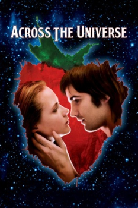

Country:United States, 133 minutes
Spoken languages:English
Genres:Drama, Romance, Fantasy
Director(s):Julie Taymor
Writer(s):Dick Clement, Ian La Frenais
Video Codec:Unknown
Number: 2281


Certification:PG-13
Storyline:
When young dockworker Jude leaves Liverpool to find his estranged father in the United States, he is swept up by the waves of change that are re-shaping the nation. Jude falls in love with Lucy, who joins the growing anti-war movement. As the body count in Vietnam rises, political tensions at home spiral out of control and the star-crossed lovers find themselves in a psychedelic world gone mad.
Cast:
Medium: Original DVD,
Loaned: No
Aspect ratio: Unknown